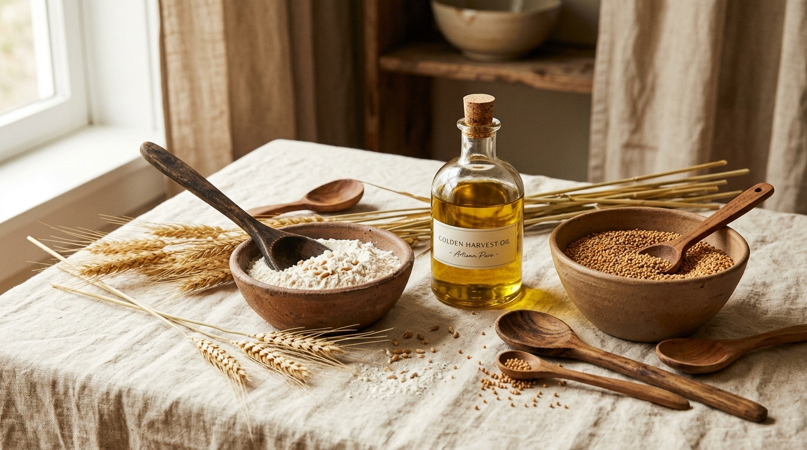
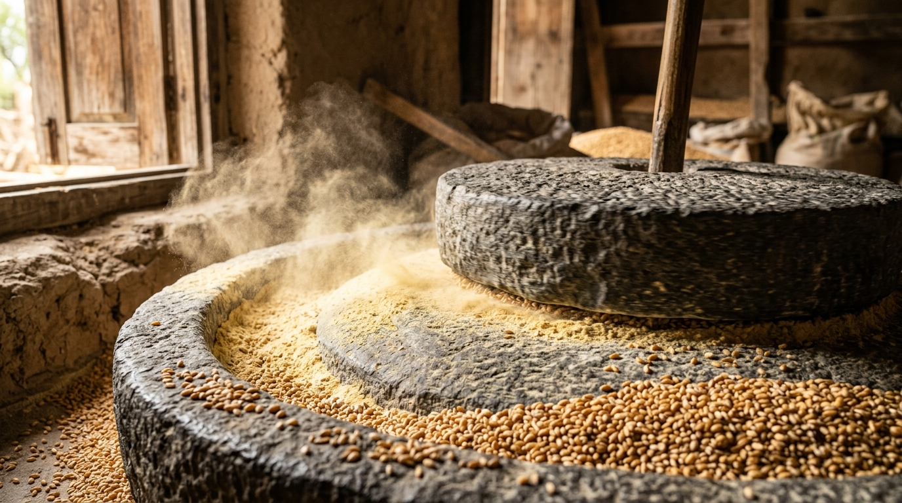
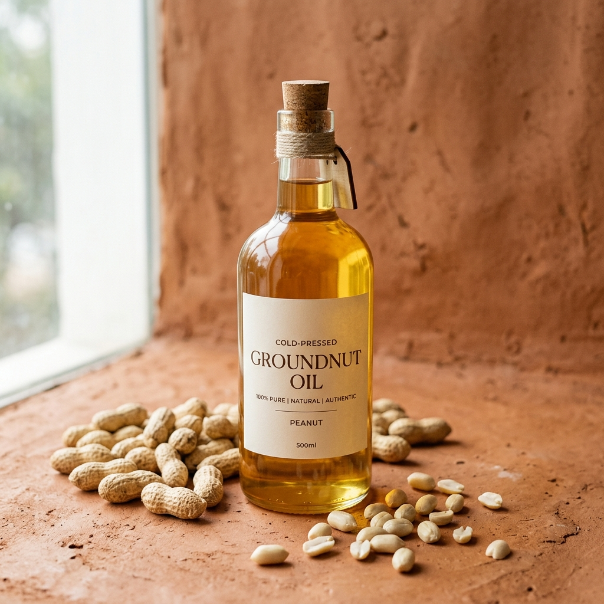
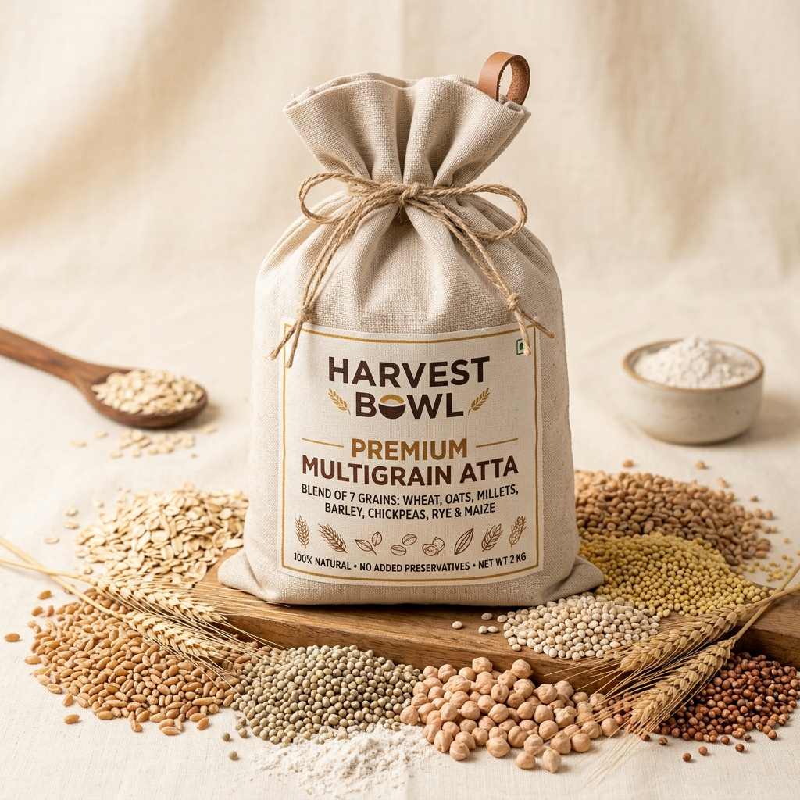
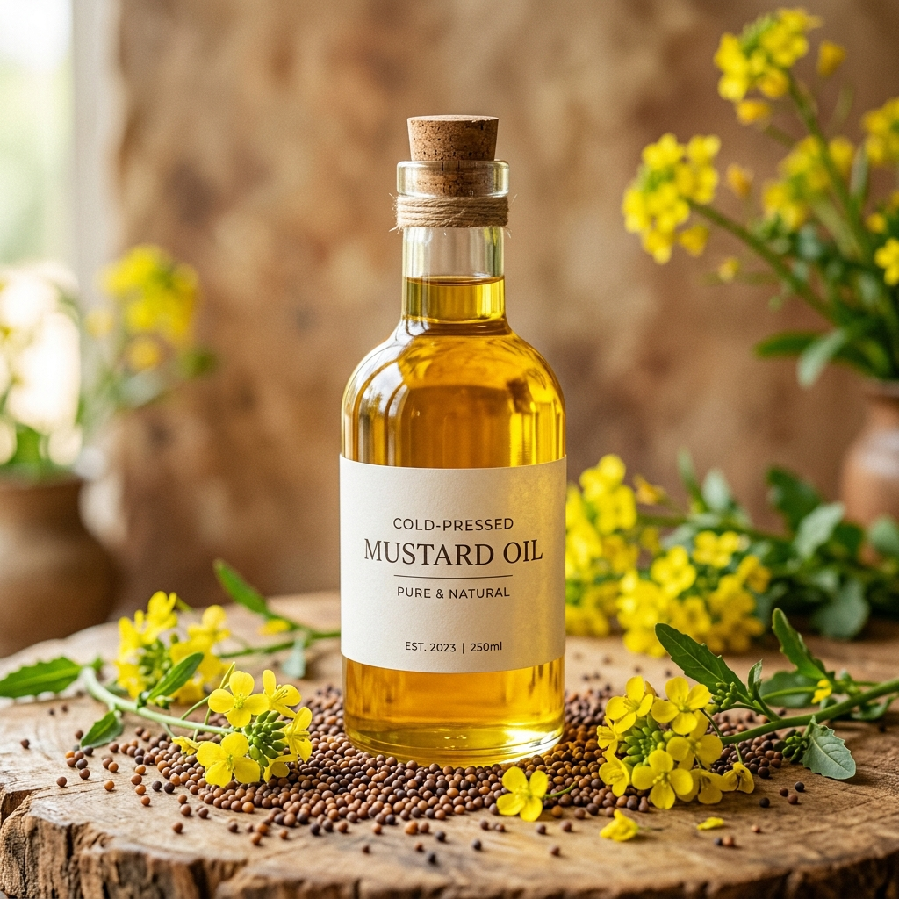

Traditional stone grinding & cold-pressed oils crafted with complete transparency. Bringing unrefined, chemical-free nutrition back to your family.

We combine traditional Indian processing techniques with modern hygiene standards to give you authentic, chemical-free food ingredients.
We do not stock pre-ground flour for weeks. Every single bag is milled daily to ensure maximum nutrient preservation.
Our slow-speed stone mills grind grain at low temperatures, locking in fibers, minerals, wheat bran, and wheat germ.
No additives, preservatives, bleach, or chemical extraction agents are ever allowed near our processing unit.
Our oils are extracted using slow revolving wooden kohlus under 45°C, keeping essential fatty acids and aroma intact.
We source high-grade grains (like MP Sharbhati Wheat) and premium oil seeds directly from verified local farms.
You are always welcome to watch us press your oils and mill your grains live right inside our physical store.

We believe you should know exactly what goes into your food. That's why we have nothing to hide. Dwarka locals can drop by our store to see the wood kohlus and stone chakkis running in real time. If you order online, you can request a live grinding video of your batch to verify that no chemicals or additives were mixed in.
Request Grinding VideoSelect pack options and order freshly processed items directly. Click on any product name to view ingredients, nutrition facts, and storage instructions.
From sourcing to delivery, see how our grain stays chemical-free and nutrient-dense throughout the process.
We handpick organic wheat, millets, and premium mustard seeds directly from verified farms.
All grains undergo a strict dry cleaning process to remove dust, husk, and impurities without washing.
Grains are slow-ground in stone mills (and oils wood-pressed) to keep vital nutrients intact.
Fresh flour is cooled and packed in eco-friendly, food-grade bags to maintain moisture balance.
Delivered fresh to your home in Dwarka and across Delhi within 24 hours of processing.
See why switching to stone-ground staples and unrefined cold-pressed oils is a healthier choice for your family.
Here is what mothers, fitness enthusiasts, and elderly clients in Dwarka say about our pure staples.

For years, we operated in the community as Kisan Atta Chakki, serving families who valued the quality of fresh grain milling. As the market became flooded with bleached, store-shelf flours and highly refined, chemical-laden cooking oils, we realized our mission needed to expand.
Under our new identity as Mitti Fresh, we have committed ourselves to raising the standard of daily nutrition. We bring together organic farming sources, authentic wood-pressing Kohlus, and traditional stone wheel chakkis, combined with absolute hygiene and transparency.
Our promise to you is simple: we treat your family's food exactly like our own. No additives, no blending of cheaper seed cakes, and no compromising on quality. Visit us in Dwarka and taste the pure difference yourself.
Follow us @MittiFresh for healthy recipes, wellness tips, seed selection videos, and updates from our Dwarka processing store.



Learn more about our milling processes, delivery, custom blends, and purity standards.
Packaged flour in grocery stores is often milled months in advance, bleached with benzoyl peroxide, and treated with preservatives to extend shelf life. At Mitti Fresh, we mill our flour daily in small batches and deliver it to your home within 24 hours of grinding, keeping it completely natural and rich in wheat germ.
Commercial refined oils are extracted using hexane solvent and heated to high temperatures (up to 200°C), which destroys vital nutrients and fats. Our cold-pressed oils are extracted using traditional wooden kohlus revolving slowly, keeping temperatures below 45°C. This locks in all natural aroma, antioxidants, and healthy fats.
Yes, absolutely! We believe in 100% transparency. You can walk into our physical store in Dwarka Sector 28 to watch your grains being stone-ground or your oil being wood-pressed. If you order online, you can request a recording of your batch getting processed.
Since our products have zero preservatives, we recommend storing them in cool, dry areas inside airtight containers. Stone-ground flour is best consumed within 30-45 days of milling, while cold-pressed oils will stay fresh for up to 6 months.
We provide daily local deliveries across Dwarka (Sector 28 and surrounding sectors), and express shipping across other parts of Delhi NCR. Order details and shipping fees are coordinated instantly via WhatsApp checkout.